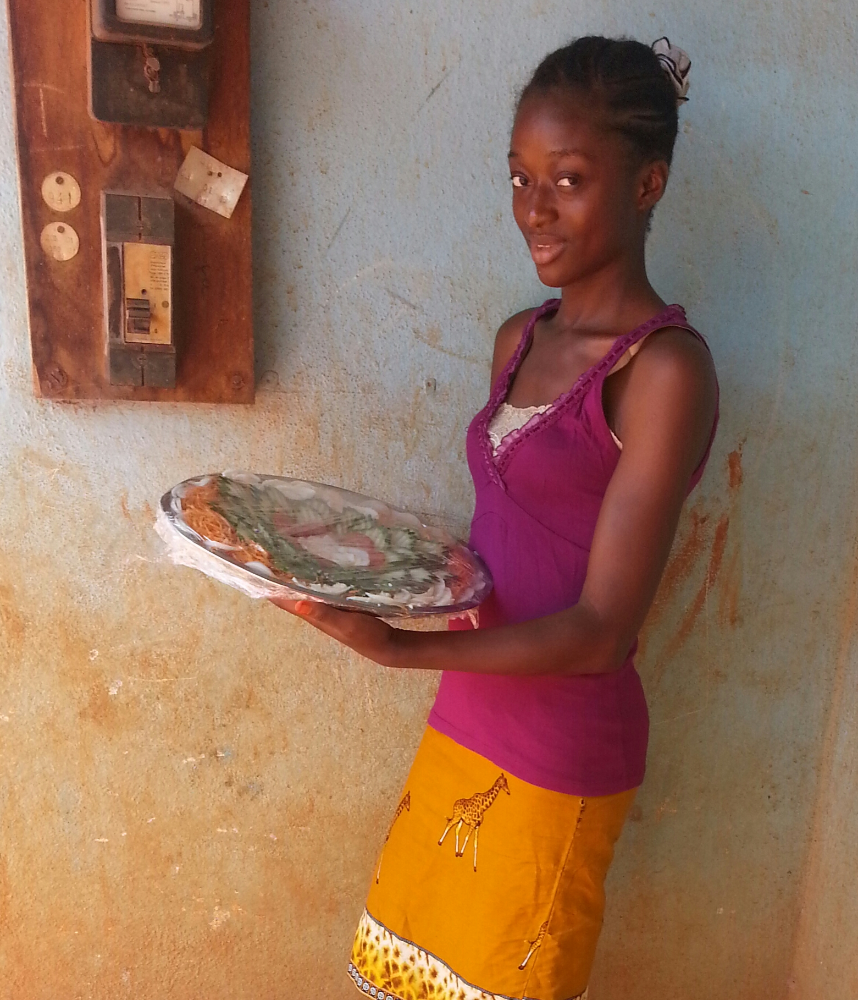

Ngando
Ngando is a lover of salad and has been producing outstanding ddesigns for over 10-years
View Profile
Flore Nice
Flore is a lover of salad and has been producing outstanding ddesigns for over 10-years
View Profile

Fon Lin
Lin is a lover of salad and has been producing outstanding ddesigns for over 10-years
View Profile